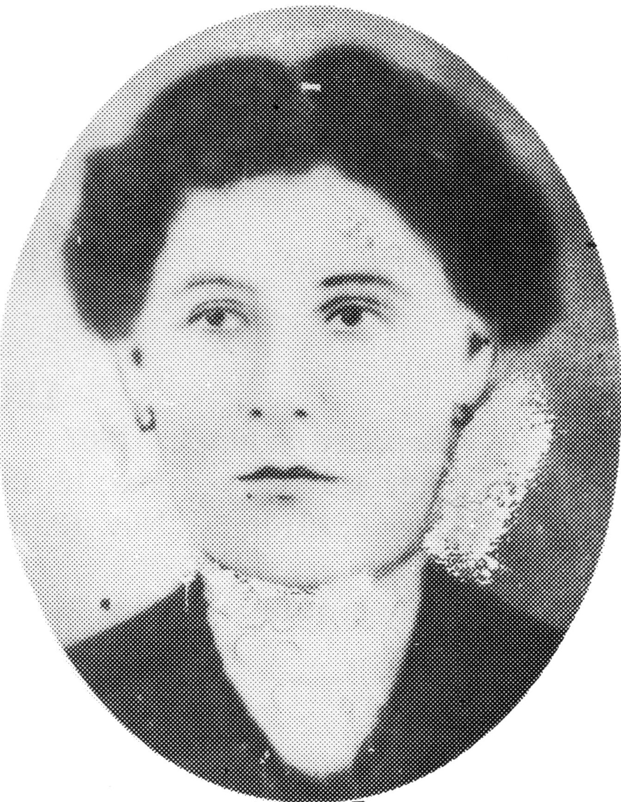
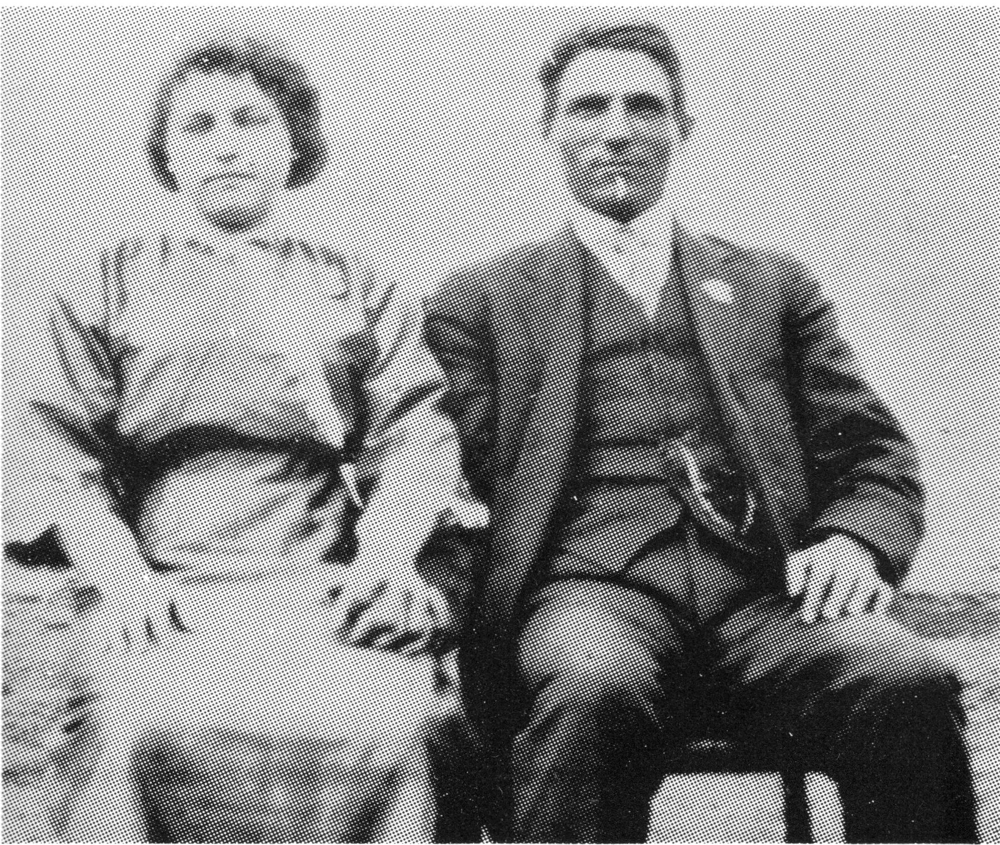

LEONIDAS L'HEUREUX
Leonidas L'Heureux was born in Crows Nest Pass, in the Rocky Mountains in 1885. His father, Moise, was helping to build the railroad at that time. The family moved to Jackfish in 1887. In 1905, Leonidas took a homestead on Sec. 24-48-18-3rd. In June, 1906, he married Laetitia Gagne. They had four girls; Hilda, Alice and twins, Alma and Cecile. Hilda passed away during her first year of black diptheria. Laetitia passed away a few days after the twins were born. At that time, only midwives helped with the baby's births. Moise and Sophie, the grandparents, raised Alice and Alma, while Alphonse and Josephine Alain, Leonidas's sister, took the other twin Cecile. Leonidas was alone for a few years, until 1915, when he married Josephine, daughter of Joseph Dion and Marie Larochelle. She was born in 1899 at Notre Dame Buckland Co. Belle Chasse, P.Q. Josephine had come west in April, 1911 with her parents to make their home at Jackfish.
Leonidas and Josephine's family was a large one, consisting of twelve children. We had the misfortune of losing a brother, William, at 18 days old who had been born with a congenital heart.
We lived in a log shack, plastered with mud and covered with white wash. There were wood floors to scrub, having no linoleum back then, and no radio or telephone.
Dad bought a new Singer sewing machine for $66.00. With a family of our size, there was lots of sewing to be done and Mom would do it all. First, she would bleach the hundred pound flour bags and the ten pound sugar bags in a big boiler full of soapy water on top of a wood cook stove, until they were white. With the large bags, she would make underwear, sheets, pillow cases, tea towels, etc. The ten pound bags were dyed into different colors which were then cut into squares and made into colorful bedspreads. Mother also used to buy sheepwool, wash it, then Grandma Dion would help Mom by carding and spinning it into wool, ready to knit. Mom would knit all she could for the family - sweater, socks, mitts, touques, etc. after it had been dyed in the colors she wanted.

Our mattresses were made of gunny sacks sewed together. After threshing in the fall, we would fill them up with nice fresh straw.
In 1927, Dad bought Jim Colwell's homestead so that my brother, Julien and I could have a ride to Jackfish Creek School with our neighbors, Rene and Henriette Bru. Later, on 1927, Dad bought the old Jackfish Church Rectory and moved it onto our C.P.R., which was across the road from the now exising St. Leon Church. After that move, we were able to drive ourselves to Ness School. I quit school at 15 years old to stay home and help my parents.
I remember my father telling us that the mules he drove did not like to cross the bridge. The only way to get them across, was to put something over their head. My father was a horse lover and often broke in horses for others. I also remember him cuttng a load of poles to take to Meota, nine miles away. He sold the whole load for one dollar, which wouldn't buy much even then. However, it did buy enough P&G soap to do the washing.
During the Second World War, two of my brothers were called to serve their country. Julien was in Toronto, Ontario at the time, as he still is, and Edouard was at home on the farm in Jackfish. Edouard became ill after some time and was discharged early. However, Julien served for the length of the war. We were quite happy that he came back alive.
Times were very hard and both Mother and Father worked long, hard days. Dad found ways to bring joy to our lives by playing the fiddle and making Christmas special by playing at being Santa. We were and continue to be, a close, loving family.

Leonidas L'Heureux
| NAME | BORN | MARRIED | SPOUSE | BOY | GIRL | DIED |
|---|---|---|---|---|---|---|
| Leonidas | July 1, 1885 | June 9, 1906 | Laetitia Gagne | 0 | 4 | |
| Laetitia | May 10, 1910 | |||||
| Remarried | Apr. 18, 1915 | Josephine Dion | 7 | 5 | Nov. 16, 1955 | |
| Josephine | July 6, 1957 | |||||
| LEONIDAS' FIRST FAMILY | ||||||
| Ida Julia | Baptized on June 2, | 1907 | Sept. 27, 1907 | |||
| Alice | July 4, 1908 | Mar. 13, 1940 | Alec Flint | 1 | 5 | |
| Alma | May 6, 1910 | Nov. 12, 1929 | William Lafrance | 2 | 4 | |
| William | Feb. 10, 1987 | |||||
| Cecile | May 6, 1910 | June 20, 1938 | Aime DuBois | 2 | 1 | June 12, 1965 |
| Aime | May 8, 1974 | |||||
| LEONIDAS' SECOND FAMILY | ||||||
| Marguerite | Apr. 23, 1916 | Apr. 18, 1938 | George Dion | 2 | 5 | |
| Julien | Aug. 11, 1918 | July 18, 1946 | Genevieve Buczynski | 0 | ||
| Remarried | Sept. 24, 1980 | Velma Biggar | 0 | 0 | ||
| Louisa | Jan. 30, 1920 | Nov. 23, 1938 | Albert Baillargeon | 3 | 3 | |
| Edouard | June 18, 1921 | Feb. 21, 1944 | Grace Mitchell | 3 | 1 | |
| Ralph | Apr. 5, 1923 | June 3, 1947 | Dorothy Pruden | 2 | 2 | |
| Emile | Sept. 12, 1924 | Feb. 21, 1949 | Mary Mitchell | 1 | 1 | |
| Marie Reine | May 11, 1926 | Nov. 14, 1945 | Arthur DuBois | 0 | 2 | |
| Moise | June 25, 1928 | Oct. 13, 1959 | Mildred Delorme | 0 | 2 | |
| Blanche | Jan. 5, 1931 | May 14, 1954 | Eugene Dussault | 2 | 3 | |
| Leonard | Jan. 17, 1933 | Apr. 23, 1957 | Louise Lysycia | 3 | 1 | |
| Remarried | Mar. 21, 1983 | Gloria Skakum | 0 | 0 | ||
| William | Apr. 12, 1935 | Apr. 30, 1935 | ||||
| Lucienne | July 31, 1936 | July 12, 1958 | Peter Luchka | 1 | 1 | |
| Leonidas' Grandchildren | ||||||
| ALICE'S FAMILY | ||||||
| Claire | Dec. 16, 1940 | , 1957 | George Anderlic | 2 | 0 | |
| Remarried | Nov. 10, 1967 | Howard Deane | 0 | 2 | ||
| Clarence | Dec. 16, 1940 | Jan. 18, 1960 | Jeannette Foster | 2 | 1 | |
| Sharon | Nov. 3, 1942 | Nov. , 1962 | Gifford Lepine | 3 | 0 | |
| Remarried | May 10, 1982 | Ben Coldwell | 0 | 0 | ||
| Jeanette | Nov. 8, 1946 | Nov. 4, 1963 | Fred Halls | 2 | 1 | |
| Patricia | Mar. 19, 1948 | Apr. 7, 1969 | Larry Youngman | 2 | 0 | |
| Marianne | Dec. 22, 1949 | Jan. 4, 1968 | David Uzelman | 1 | 3 | |
| Leonidas' Great Grandchildren | ||||||
| Alice's Grandchildren | ||||||
| CLAIRE'S FAMILY | ||||||
| Garry | Sept. , 1958 | Aug. , 1981 | 0 | 1 | ||
| Robert | ||||||
| Donna | ||||||
| Patricia | ||||||
| CLARENCE'S FAMILY | ||||||
| Cheryl | Oct. 10, 1961 | Jan. 17, 1981 | Chuck Jones | 2 | 1 | |
| Marcel | Apr. 15, 1963 | Oct. 29, 1983 | Debbie Ulrieth | 1 | ||
| Chance | July 4, 1970 | |||||
| SHARON'S FAMILY | ||||||
| Troy | May 30, 1963 | Aug. 23, 1983 | Heather | |||
| Trent | Dec. 29, 1964 | |||||
| Trevor | Nov. 26, 1970 | |||||
| JEANNETTE'S FAMILY | ||||||
| Michael | May 24, 1966 | |||||
| Ryan | Jan. 8, 1972 | |||||
| Kimberley | Jan. 7, 1977 | |||||
| PATRICIA'S FAMILY | ||||||
| Grayson | Nov. 18, 1973 | |||||
| Morgan | Feb. 19, 1979 | |||||
| MARIANNE'S FAMILY | ||||||
| Sherry | Oct. 2, 1968 | |||||
| Charlene | Dec. 10, 1970 | |||||
| Cameron | Jan. 17, 1980 | |||||
| Jade | Aug. 11, 1984 | |||||
| Leonidas' Great Great Grandchildren | ||||||
| Alice's Great Grandchildren | ||||||
| Clarence's Grandchildren | ||||||
| MARCEL'S FAMILY | ||||||
| Nathan | Jan. 17, 1986 | |||||
| Leonidas' Grandchildren | ||||||
| ALMA'S FAMILY | ||||||
| Dolly | Feb. 15, 1931 | Nov. 28, 1948 | Ronald Potts | 2 | 1 | |
| Theresa | Apr. 13, 1933 | Jan. 14, 1953 | Norman Potts | 0 | 2 | |
| Norman | Oct. 30, 1969 | |||||
| Remarried | Feb. 2, 1981 | Henery Penner | ||||
| Lloyd | June 15, 1936 | Apr. 7, 1958 | Arlene Willis | 4 | 1 | |
| Corinne | June 7, 1937 | June 7, 1958 | Ted Nielsen | 2 | 1 | |
| Leonard | Sept. 16, 1942 | July 4, 1964 | Linda Sloan | 1 | 1 | |
| Gayle | Mar. 30, 1949 | Feb. 11, 1967 | Wayne Rempel | 1 | 1 | |
| Leonidas' Great Grandchildren | ||||||
| Alma's Grandchildren | ||||||
| DOLLY'S FAMILY | ||||||
| Leslie | Nov. 12, 1949 | Dec. , 1970 | Noella Neil | 1 | 1 | |
| Sharon | June 25, 1951 | Apr. 19, 1969 | Garry Labby | 1 | 1 | |
| Gordie | June 17, 1954 | Mar. 26, 1977 | Lori LaPerier | 1 | 1 | |
| THERESA'S FAMILY | ||||||
| Dean | June 5, 1954 | Feb. 29, 1961 | Mike Brooks | 0 | 3 | |
| Remarried | July 3, 1982 | Howard Thompson | 1 | 0 | ||
| Melanie | May 31, 1957 | Sept. 4, 1976 | Mike Englot | 2 | 0 | |
| LLOYD'S FAMILY | ||||||
| Darrel | Jan. 31, 1959 | Aug. 11, 1984 | Julianna Angermeier | |||
| Mark | June 19, 1960 | |||||
| Terry | July 19, 1961 | |||||
| Greg | Sept. 26, 1963 | |||||
| Shalaine | Nov. 27, 1971 | |||||
| CORINNE'S FAMILY | ||||||
| Barry | Mar. 30, 1959 | |||||
| Dwayne | July 15, 1962 | |||||
| Jeanette | Feb. 25, 1967 | |||||
| LEONARD'S FAMILY | ||||||
| Leah | July 20, 1965 | |||||
| Maurice | May 6, 1968 | |||||
| GAYLE'S FAMILY | ||||||
| Connie | Aug. 28, 1967 | |||||
| Kerry | Apr. 19, 1971 | |||||
| Leonidas' Great Great Grandchildren | ||||||
| Alma's Great Grandchildren | ||||||
| Dolly's Grandchildren | ||||||
| SHARON'S FAMILY | ||||||
| Blaine | Aug. 16, 1971 | |||||
| Jennelle | Apr. 26, 1974 | |||||
| LESLIE'S FAMILY | ||||||
| Christine | Dec. 24, 1973 | |||||
| Ronald | July 28, 1975 | |||||
| GORDIE'S FAMILY | ||||||
| Ronnie Lynn | , 1976 | |||||
| Kelly | , 1978 | |||||
| Theresa's Grandchildren | ||||||
| DEAN'S FAMILY | ||||||
| Michelle | Aug. 29, 1971 | |||||
| Theresa | Nov. 30, 1973 | |||||
| Renee | May 21, 1977 | |||||
| Norman | Sept. 8, 1983 | |||||
| MELANIE'S FAMILY | ||||||
| Michael | Aug. 26, 1977 | |||||
| Robert | Feb. 22, 1979 | |||||
| Leonidas' Grandchildren | ||||||
| CECILE'S FAMILY | ||||||
| Paul | Oct. 3, 1939 | |||||
| Yvette | Aug. 28, 1941 | |||||
| Antoine | July 29, 1943 | |||||
| Leonidas' Grandchildren | ||||||
| MARGUERITE'S FAMILY | ||||||
| Zelie (Sister) | Dec. 14, 1939 | Feb. 3, 1960 | (Profession to Presentation of Mary) | |||
| Edith | June 7, 1941 | Aug. 29, 1970 | Joseph Woo | 1 | 1 | |
| Leonard | Jan. 29, 1943 | Apr. 20, 1963 | Vicki Bregg | 1 | 1 | |
| Remarried | May 18, 1974 | Darlene Schultz | 0 | 1 | ||
| Claire | Sept. 7, 1946 | June 7, 1969 | Tony Pidskalny | 0 | 2 | |
| Rose | Feb. 16, 1952 | Oct. 23, 1976 | Darcy Drury | 2 | 1 | |
| Arthur | May 6, 1956 | May 14, 1977 | Eleanor Unrau | 1 | 2 | |
| Georgette | Dec. 26, 1957 | Dec. 27, 1975 | Charles Ehr | 2 | 1 | |
| Leonidas' Great Grandchildren | ||||||
| Marguerite's Grandchildren | ||||||
| EDITH'S FAMILY | ||||||
| Lehua | Sept. 24, 1973 | |||||
| Cory | Apr. 26, 1975 | |||||
| LEONARD'S FAMILY | ||||||
| Denise | June 10, 1964 | |||||
| Robert | Apr. 26, 1967 | |||||
| Lisa | Apr. 9, 1977 | |||||
| CLAIRE'S FAMILY | ||||||
| Kathy | June 11, 1970 | |||||
| Nikki | Feb. 26, 1972 | Sept. 7, 1977 | ||||
| ROSE'S FAMILY | ||||||
| Shawn | Mar. 22, 1979 | |||||
| Evan | Feb. 26, 1981 | |||||
| Laura | Dec. 7, 1983 | |||||
| ARTHUR'S FAMILY | ||||||
| Brandy | June 29, 1977 | |||||
| Levi | Oct. 3, 1980 | |||||
| Tiffany | Mar. 12, 1982 | |||||
| GEORGETTE'S FAMILY | ||||||
| Carey | Feb. 10, 1976 | |||||
| Kevin | July 29, 1977 | |||||
| Micheal | Nov. 25, 1979 | |||||
| Leonidas' Grandchildren | ||||||
| LOUISA'S FAMILY | ||||||
| Therese | Dec. 30, 1940 | Oct. 29, 1959 | Gilbert St. Amant | 5 | 1 | |
| Henri | Dec. 6, 1941 | Oct. 2, 1965 | Donna Levasseur | 2 | 3 | |
| Aime | July 20, 1942 | Dec. 3, 1966 | Rose Dulton | 1 | 2 | |
| Jeannette | Feb. 25, 1944 | Apr. 29, 1942 | Adrian St. Amant | 2 | 1 | |
| Emile | Mar. 3, 1948 | Dec. 28, 1968 | Sheila Hanson | 2 | 0 | |
| Mariette | Apr. 13, 1953 | Nov. 21, 1970 | Don McGuire | 1 | 1 | |
| Remarried | Sept. 18, 1982 | Ken Stolz | 2 | 0 | ||
| Leonidas' Great Grandchildren | ||||||
| Louise's Grandchildren | ||||||
| THERESE'S FAMILY | ||||||
| Guy | Aug. 5, 1960 | Apr. 25, 1981 | Lorraine Richard | 3 | 0 | |
| Robert | Sept. 23, 1961 | |||||
| Paul | May 15, 1963 | |||||
| Laurette | July 28, 1964 | |||||
| Mark | Sept. 23, 1969 | |||||
| George | Nov. 3, 1972 | |||||
| HENRI'S FAMILY | ||||||
| Laura | July 7, 1966 | |||||
| Michelle | June 25, 1967 | |||||
| Lorne | Nov. 10, 1969 | |||||
| Kevin | Apr. 15, 1971 | |||||
| Karen | May 12, 1977 | |||||
| AIME'S FAMILY | ||||||
| Wade | Apr. 7, 1967 | |||||
| Sherry | May 28, 1968 | |||||
| Lisa | Oct. 9, 1970 | |||||
| JEANNETTE'S FAMILY | ||||||
| Bridgitte | Sept. 16, 1963 | Apr. 28, 1984 | Ernie Morgan | 0 | 0 | |
| Daniel | Mar. 9, 1966 | |||||
| Pierre | Juiy 16, 1967 | |||||
| EMILE'S FAMILY | ||||||
| Bryce | June 14, 1971 | |||||
| Lee | July 4, 1974 | |||||
| MARIETTE'S FAMILY | ||||||
| Lisa | Nov. 28, 1971 | |||||
| Stacy | Feb. 27, 1975 | |||||
| Ryan | Mar. 7, 1981 | |||||
| Kim | Sept. 5, 1983 | |||||
| Leonidas' Great Great Grandchildren | ||||||
| Louisa's Great Grandchildren | ||||||
| Therese's Grandchildren | ||||||
| GUY'S FAMILY | ||||||
| Blair | Apr. 1, 1982 | |||||
| Jason | Aug. 27, 1983 | |||||
| Dean | Sept. 20, 1985 | |||||
| Leonidas' Grandchildren | ||||||
| EDOUARD'S FAMILY | ||||||
| William | Apr. 9, 1945 | Apr. 18, 1967 | Elaine Cousins | 1 | 1 | |
| Lawrence | Dec. 14, 1947 | Apr. 18, 1972 | Rita Whitford | 1 | 1 | |
| Ronald | Aug. 1, 1953 | Oct. 2, 1976 | Lorna Clark | 3 | 1 | |
| Darlene | Jan. 24, 1957 | Apr. 16, 1977 | George Colley | 1 | 1 | |
| Leonidas' Great Grandchildren | ||||||
| Edouard's Grandchildren | ||||||
| WILLIAM'S FAMILY | ||||||
| Lee | July 7, 1969 | |||||
| Colleen | Nov. 10, 1971 | |||||
| LAWRENCE'S FAMILY | ||||||
| Earl | June 12, 1972 | |||||
| Ramona | Mar. 7, 1974 | |||||
| RONALD'S FAMILY | ||||||
| Ashley | Mar. 29, 1976 | |||||
| Todd | Dec. 20, 1977 | |||||
| Corey | Apr. 29, 1979 | |||||
| Chantelle | June 1, 1980 | |||||
| DARLENE'S FAMILY | ||||||
| Tanya | Aug. 29, 1977 | |||||
| George | June 30, 1980 | |||||
| Leonidas' Grandchildren | ||||||
| RALPH'S FAMILY | ||||||
| Richard | Oct. 20, 1948 | |||||
| Sharon | Mar. 16, 1950 | Feb. 1, 1969 | Joe Rorke | 4 | 2 | |
| Lorraine | Jan. 24, 1953 | Feb. 27, 1971 | John Ingalls | 1 | 4 | |
| Robert (adpt) | Apr. 27, 1958 | |||||
| Leonidas' Great Grandchildren | ||||||
| Ralph's Grandchildren | ||||||
| SHARON'S FAMILY | ||||||
| Joey | Feb. 18, 1968 | |||||
| Jason | Jan. 28, 1971 | |||||
| Jenine | Nov. 29, 1976 | |||||
| Julieanne | July 7, 1977 | |||||
| James | Sept. 8, 1979 | |||||
| Justene | Aug. 1, 1984 | |||||
| LORRAINE'S FAMILY | ||||||
| Lorianne | June 9, 1971 | |||||
| Jennifer | Mar. 31, 1974 | |||||
| Christene | June 16, 1977 | |||||
| Jessie | Jan. 12, 1981 | |||||
| Jeffrey | Sept. 12, 1985 | |||||
| Leonidas' Grandchildren | ||||||
| EMILE'S FAMILY | ||||||
| Illian | Apr. 14, 1950 | Nov. 2, 1968 | Doug Hackney | 1 | 1 | |
| Remarried | Nov. 27, 1976 | Gordon Rahm | 1 | 1 | ||
| Louis | Mar. 26, 1952 | May 21, 1977 | Judy McLeod | 1 | 1 | |
| Leonidas' Great Grandchildren | ||||||
| Emile's Grandchildren | ||||||
| ILLIAN'S FAMILY | ||||||
| Tammie | Dec. 31, 1967 | |||||
| Bryan | Apr. 24, 1970 | |||||
| Cosette | Dec. 14, 1981 | |||||
| Timmie | June 12, 1976 | |||||
| LOUIS' FAMILY | ||||||
| Scotty | June 27, 1981 | |||||
| Rene | Sept. 4, 1985 | |||||
| Leonidas' Grandchildren | ||||||
| MARIE REINE'S FAMILY | ||||||
| Florence | Jan. 14, 1947 | Mar. 18, 1967 | Maurice Bru | 0 | 1 | |
| Annette | Apr. 5, 1949 | Feb. 4, 1967 | Aime Arcand | 1 | 2 | |
| Leonidas' Great Grandchildren | ||||||
| Marie Reine's Grandchildren | ||||||
| FLORENCE'S FAMILY | ||||||
| Sherry | Jan. 28, 1968 | |||||
| ANNETTE'S FAMILY | ||||||
| Michelle | Dec. 20, 1967 | |||||
| Daniel | Mar. 1, 1969 | |||||
| Nicole | June 9, 1973 | |||||
| Leonidas' Grandchildren | ||||||
| MOISE'S FAMILY | ||||||
| Betty | July 26, 1960 | July 28, 1979 | Ed O'Hare | 3 | 0 | |
| Alma | Feb. 14, 1962 | July 23, 1983 | Tim Hrabia | 0 | 0 | |
| Leonidas' Great Grandchildren | ||||||
| Moise's Grandchildren | ||||||
| BETTY'S FAMILY | ||||||
| Frankie | May 19, 1980 | |||||
| Patrick | Jan. 28, 1982 | |||||
| Christopher | June 5, 1984 | |||||
| Leonidas' Grandchildren | ||||||
| BLANCHE'S FAMILY | ||||||
| Germaine | Mar. 11, 1955 | June 8, 1974 | Morris Skoretz | 0 | 2 | |
| Bernard | Mar. 20, 1956 | Apr. 14, 1977 | ||||
| Helene | Nov. 2, 1958 | June 17, 1978 | Dana Fisher | |||
| Lionel | Aug. 8, 1961 | |||||
| Michele | Dec. 17, 1965 | |||||
| Leonidas' Great Grandchildren | ||||||
| Blanche's Grandchildren | ||||||
| GERMAINE'S FAMILY | ||||||
| Stacey | Jan. 13, 1976 | |||||
| Cassandra | Sept. 10, 1984 | |||||
| Leonidas' Grandchildren | ||||||
| LEONARD'S FAMILY | ||||||
| Wally | Nov. 29, 1957 | July 12, 1979 | Kathy Gauthier | 1 | 0 | |
| Nadie | Dec. 9, 1959 | Aug. 25, 1984 | Trenton Graves | 0 | 1 | |
| Len | Jan. 10, 1962 | |||||
| Kim | Mar. 1, 1969 | |||||
| Leonidas' Great Grandchildren | ||||||
| Leonard's Grandchildren | ||||||
| WALLY'S FAMILY | ||||||
| Curtis | Aug. 15, 1980 | |||||
| Leonidas' Grandchildren | ||||||
| LUCIENNE'S FAMILY | ||||||
| Kenneth | Aug. 12, 1959 | |||||
| Debbie | Mar. 7, 1961 | |||||
| TOTAL DESCENDANTS | 280 |
| LIVING | 270 |
| DECEASED | 10 |